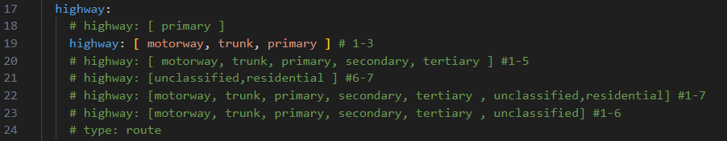
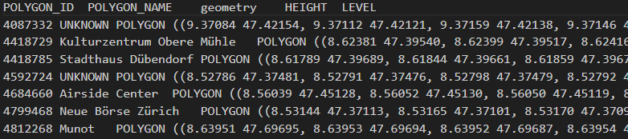
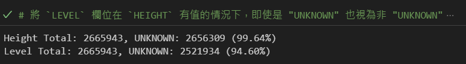
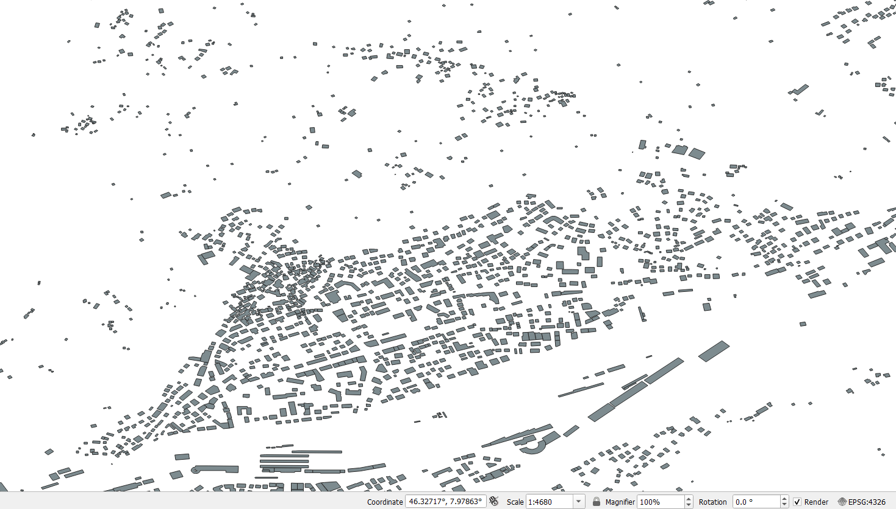
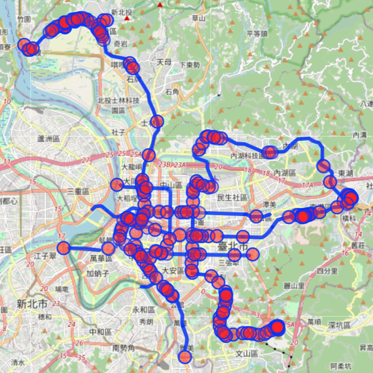
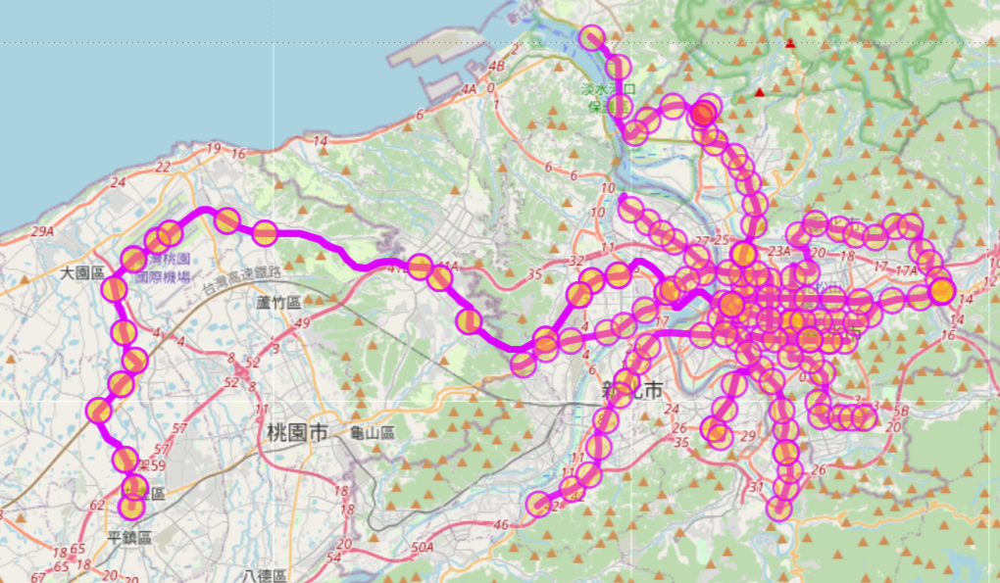
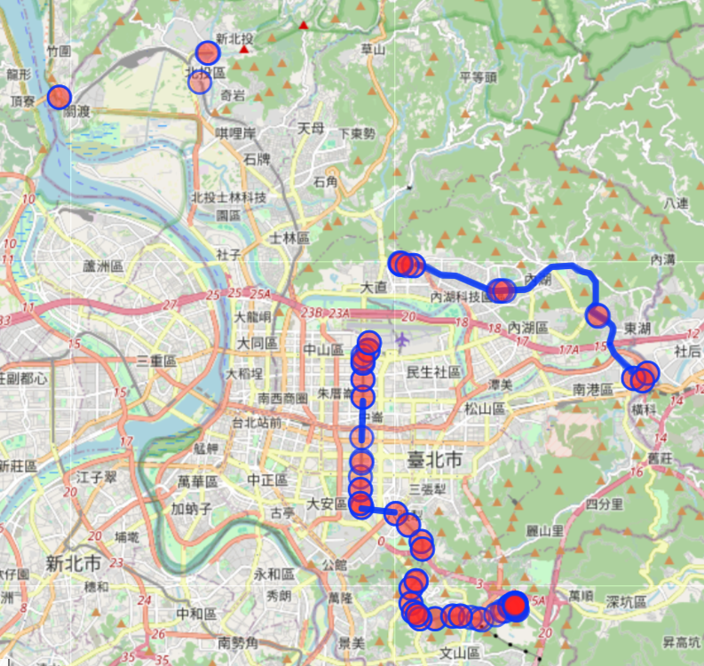
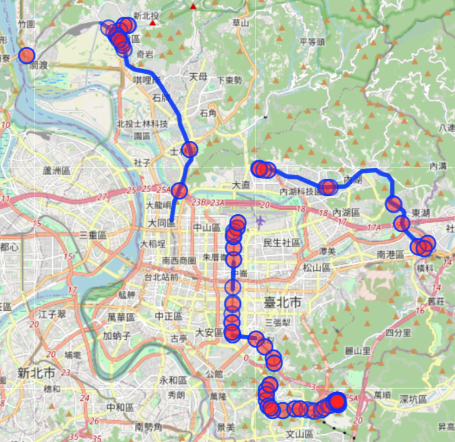
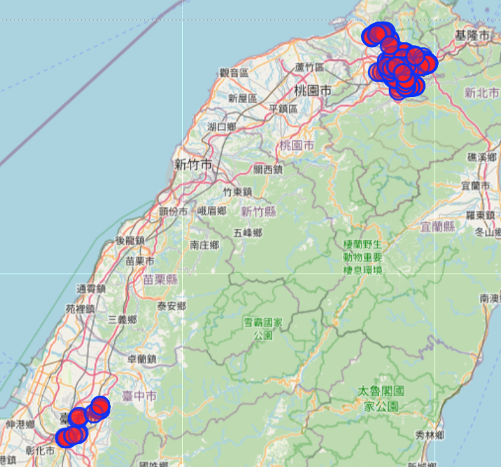
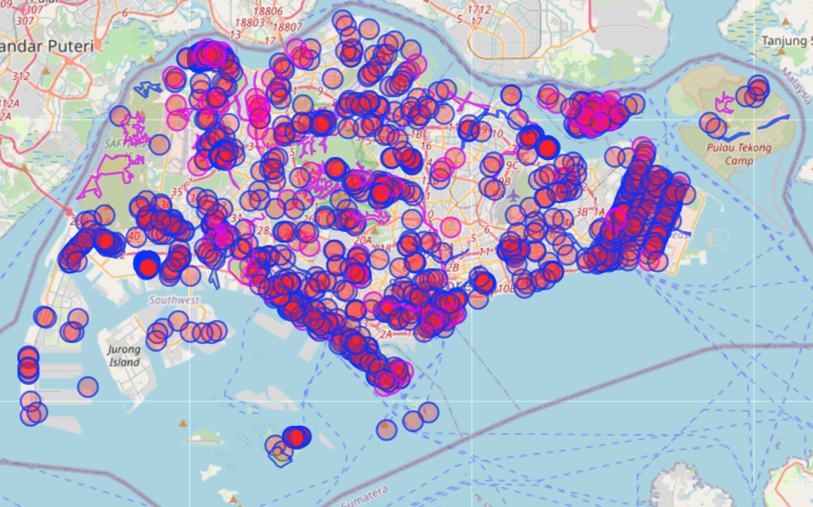

1. execute directly for Hofn_type 1(water), 2(coastline) and 14(railway)
python osm_offline_parser.py ./data/input/japan-latest.osm.pbf 440 1
python osm_offline_parser.py ./data/input/japan-latest.osm.pbf 440 2
python osm_offline_parser.py ./data/input/japan-latest.osm.pbf 440 14
2. select the road_level before executing for Hofn type 7(1~3) (highway)
(method 1) modify config.ymal

python osm_offline_parser.py ./data/input/japan-latest.osm.pbf 440 7
(method 2)from input line
python osm_offline_parser.py ./data/input/malaysia-singapore-brunei-latest.osm.pbf 525 7 -t highway:[motorway,trunk,primary]
merge
python geo_polygon_generator.py 440 '1 2 7 14'
python osm_offline_parser.py ./data/input/switzerland-latest.osm.pbf 228 9



Validation:
multi_polygon_df = hofn_df[hofn_df.geometry.apply(lambda x: x.type == "MultiPolygon")]
multi_linestring_df = hofn_df[hofn_df.geometry.apply(lambda x: x.type == "MultiLineString")]
if hofn_type in ["1", "5", "10", "11"]:
if not all(hofn_df[DataColumns.GEOMETRY.value].is_valid):
elif hofn_type == "2":
if not all(hofn_df[DataColumns.GEOMETRY.value].is_simple):
procedure
is_post_process = not is_process_only_output_relation_geometries
is_divide_process = only_divide_ids is not None and not only_post_processing
is_normal_process = not only_post_processing and not is_divide_process and not is_process_only_output_relation_geometries
mode:
rings: [ "1", "5", "11" ]
lines: [ "2", "7", "10", "6", "14", "3" ]
TODO:如何用area ID指定搜尋的區域
[out:json][timeout:25];
{{geocodeArea:Taipei}}->.searchArea;
(
way[railway=subway](area.searchArea);
);
out body;
>;
out skel qt;

[out:json][timeout:25];
{{geocodeArea:Taipei}}->.searchArea;
(
relation[route=subway](area.searchArea);
);
out body;
>;
out skel qt;

[out:json][timeout:25];
{{geocodeArea:Taipei}}->.searchArea;
(
way[railway=subway][layer=1](area.searchArea);
);
out body;
>;
out skel qt;

[out:json][timeout:25];
{{geocodeArea:Taipei}}->.searchArea;
(
way[railway=subway][layer=1](area.searchArea);
way[railway=subway][layer=2](area.searchArea);
);
out body;
>;
out skel qt;

TODO: 如何知道layer的範圍
[out:json][timeout:55];
// Fetch areas "Taipei" and "Taichung" to search in
{{geocodeArea:Taipei}}->.taipeiArea;
{{geocodeArea:Taichung}}->.taichungArea;
(.taipeiArea; .taichungArea;)->.combinedArea;
(
way[railway=subway](area.combinedArea);
);
out body;
>;
out skel qt;

[out:json][timeout:25];
// Fetch the area of Singapore
{{geocodeArea:Singapore}}->.searchArea;
// Gather results for water bodies within Singapore
(
way[natural=water](area.searchArea);
relation[natural=water](area.searchArea);
);
// Print results
out body;
>;
out skel qt;
